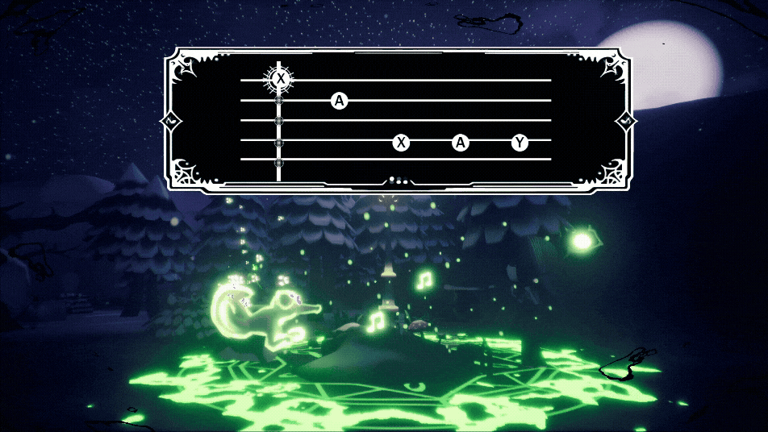

Mécanique de la musique
En pair programming, j'ai conçu le système de musique, la mécanique principale du jeu. Nous avons d'abord schématisé le système sur Figma avant de l'implémenter en C++ sous Unreal Engine. Il repose sur des QTE synchronisés : les deux joueurs doivent agir au bon moment pour valider une note.
Multijoueurs / Architecture projet
J'ai réutilisé un système de multijoueur local développé lors d'un exercice précédent pour mettre rapidement en place la gestion des inputs et des joueurs. J'ai ensuite conçu la state machine et le système de déplacement, sur lesquels le système de QTE musical s'est intégré naturellement.
Gamefeel mécanique de la musique
En fin de projet, je me suis concentré sur le gamefeel en ajoutant des feedbacks visuels, sonores et animés. Une note réussie déclenche des retours positifs, une note ratée des retours clairs sans être frustrants. Ce travail a transformé une mécanique fonctionnelle en une expérience vraiment plaisante.